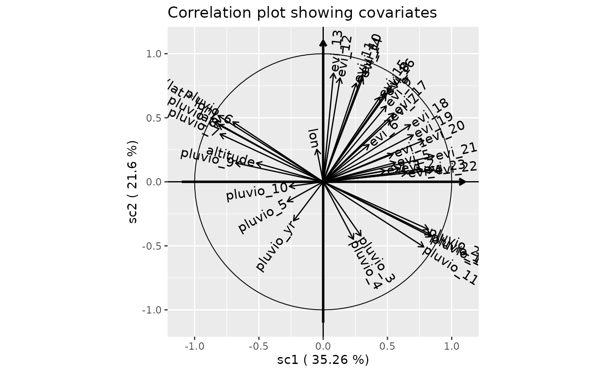
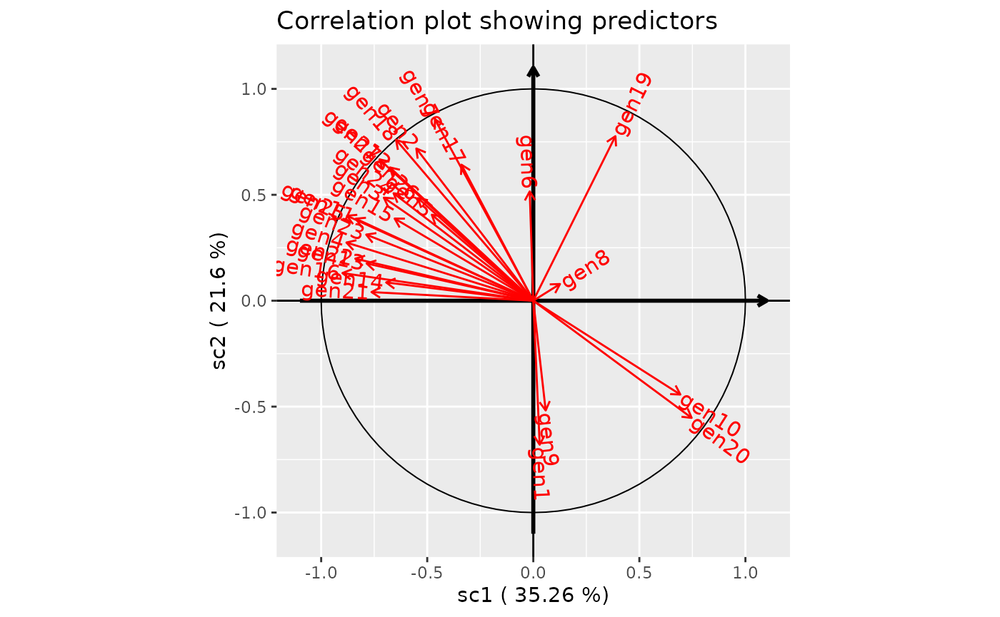

Introduction to scglr
G. Cornu - Forêts et Sociétés - Cirad
30/08/2018
Source:vignettes/SCGLR.Rmd
SCGLR.Rmd
library(SCGLR)
# load sample data
data(genus)
# get variable names from dataset
n <- names(genus)
ny <- n[grep("^gen",n)] # Y <- names that begins with "gen"
nx <- n[-grep("^gen",n)] # X <- remaining names
# remove "geology" and "surface" from nx
# as surface is offset and we want to use geology as additional covariate
nx <-nx[!nx%in%c("geology","surface")]
# build multivariate formula
# we also add "lat*lon" as computed covariate to catch spatial spatial patterns
form <- multivariateFormula(ny,c(nx,"I(lat*lon)"),A=c("geology"))
# define family
fam <- rep("poisson",length(ny))
genus.scglr <- scglr(formula=form,data = genus,family=fam, K=4,
offset=genus$surface)Display a summary of results
summary(genus.scglr)## Squared correlations with numerical covariates (in decreasing order):
## sc1 sc2 sc3 sc4 best_plane best_val
## I(lat * lon) 0.66880 0.26787 7.69e-05 2.03e-02 1/2 0.937
## lat 0.70973 0.21923 2.94e-02 1.96e-03 1/2 0.929
## pluvio_1 0.70736 0.18380 4.48e-02 3.06e-07 1/2 0.891
## pluvio_11 0.61328 0.25904 2.55e-02 2.70e-02 1/2 0.872
## pluvio_12 0.69657 0.16913 3.45e-02 2.25e-03 1/2 0.866
## pluvio_8 0.66418 0.19905 6.49e-03 7.62e-02 1/2 0.863
## lon 0.00247 0.06429 6.25e-01 2.19e-01 3/4 0.844
## altitude 0.26936 0.02136 5.68e-01 1.83e-02 1/3 0.837
## pluvio_9 0.46391 0.02146 3.60e-01 4.12e-03 1/3 0.823
## pluvio_2 0.67099 0.13844 3.96e-02 2.09e-02 1/2 0.809
## evi_12 0.01730 0.65767 9.26e-03 1.48e-01 2/4 0.806
## evi_10 0.09297 0.69712 2.76e-04 3.18e-02 1/2 0.790
## evi_21 0.74633 0.04065 9.19e-03 5.80e-03 1/2 0.787
## pluvio_7 0.64409 0.13875 1.95e-02 3.67e-02 1/2 0.783
## evi_22 0.73945 0.00834 9.31e-03 1.79e-02 1/4 0.757
## evi_13 0.00652 0.71963 4.10e-05 3.37e-02 2/4 0.753
## pluvio_5 0.07808 0.02399 5.53e-01 2.00e-01 3/4 0.753
## evi_14 0.09405 0.65146 3.60e-02 2.62e-03 1/2 0.746
## evi_11 0.06628 0.59269 1.13e-02 1.42e-01 2/4 0.734
## evi_8 0.23786 0.48037 6.88e-03 7.95e-03 1/2 0.718
## evi_20 0.61219 0.10471 3.74e-02 2.25e-03 1/2 0.717
## pluvio_6 0.49315 0.21866 2.13e-02 2.92e-02 1/2 0.712
## evi_16 0.23937 0.45836 8.98e-03 1.97e-02 1/2 0.698
## evi_18 0.46185 0.19867 5.50e-05 1.85e-02 1/2 0.661
## pluvio_10 0.06931 0.00133 5.71e-01 1.21e-03 1/3 0.640
## evi_1 0.29570 0.04706 3.45e-01 8.85e-02 1/3 0.640
## evi_23 0.59027 0.00952 4.92e-02 2.13e-02 1/3 0.639
## evi_15 0.19499 0.43739 1.12e-01 3.06e-05 1/2 0.632
## evi_19 0.49159 0.13345 1.76e-02 4.19e-04 1/2 0.625
## evi_4 0.42181 0.00472 1.22e-01 1.73e-01 1/4 0.594
## evi_9 0.24108 0.35092 5.44e-02 5.07e-02 1/2 0.592
## evi_17 0.30351 0.28835 9.40e-04 3.18e-03 1/2 0.592
## pluvio_4 0.05537 0.20147 3.80e-01 1.65e-01 2/3 0.581
## evi_2 0.35567 0.01105 2.23e-01 1.62e-01 1/3 0.578
## evi_3 0.23373 0.00752 3.32e-01 2.33e-01 1/3 0.566
## evi_5 0.31808 0.02263 4.98e-02 2.14e-01 1/4 0.532
## evi_7 0.27081 0.23478 1.96e-01 5.81e-03 1/2 0.506
## pluvio_3 0.08644 0.17868 4.02e-04 1.46e-01 2/4 0.325
## pluvio_yr 0.05313 0.09302 2.11e-01 1.32e-02 2/3 0.304
## evi_6 0.12703 0.08455 1.39e-01 1.36e-01 3/4 0.275
##
## Squared correlations with linear predictors (in decreasing order):
## sc1 sc2 sc3 sc4 best_plane best_val
## gen1 0.000912 0.46237 0.000899 0.53582 2/4 0.998
## gen21 0.582105 0.00166 0.000419 0.41581 1/4 0.998
## gen18 0.418668 0.57730 0.002436 0.00159 1/2 0.996
## gen8 0.015876 0.00621 0.924547 0.05336 3/4 0.978
## gen27 0.525994 0.44516 0.022142 0.00670 1/2 0.971
## gen7 0.214801 0.73265 0.002168 0.05038 1/2 0.947
## gen22 0.704343 0.03946 0.232465 0.02374 1/3 0.937
## gen16 0.809616 0.01703 0.126117 0.04724 1/3 0.936
## gen25 0.770678 0.16066 0.030781 0.03788 1/2 0.931
## gen4 0.776168 0.07545 0.013762 0.13462 1/4 0.911
## gen17 0.114859 0.41245 0.470803 0.00189 2/3 0.883
## gen13 0.617553 0.03093 0.094788 0.25673 1/4 0.874
## gen20 0.557628 0.30612 0.124115 0.01214 1/2 0.864
## gen12 0.456888 0.39584 0.000520 0.14675 1/2 0.853
## gen11 0.700466 0.14993 0.000347 0.14926 1/2 0.850
## gen23 0.620545 0.09738 0.214517 0.06755 1/3 0.835
## gen2 0.304118 0.51641 0.177271 0.00220 1/2 0.821
## gen14 0.481295 0.00746 0.302236 0.20900 1/3 0.784
## gen19 0.149902 0.60341 0.108745 0.13794 1/2 0.753
## gen6 0.000284 0.26622 0.376885 0.35661 3/4 0.733
## gen3 0.496492 0.23665 0.090771 0.17608 1/2 0.733
## gen15 0.427298 0.15050 0.305844 0.11635 1/3 0.733
## gen9 0.003411 0.26844 0.433794 0.29436 3/4 0.728
## gen24 0.434008 0.25733 0.274629 0.03404 1/3 0.709
## gen10 0.480673 0.19625 0.149038 0.17404 1/2 0.677
## gen5 0.228834 0.16479 0.374878 0.23150 3/4 0.606
## gen26 0.295846 0.23466 0.232525 0.23697 1/4 0.533
##
## Coefficients for dependant variables:
## gen1 gen2 gen3 gen4 gen5 gen6 gen7 gen8
## (intercept) -1.13391 -2.4178 -3.1632 -2.3851 -2.4478 -2.87852 -1.1772 -0.1396
## sc1 0.00354 -0.1071 -0.1725 -0.1978 -0.0687 -0.00139 -0.0622 0.0212
## sc2 -0.10061 0.1762 0.1504 0.0778 0.0736 0.05385 0.1449 0.0168
## sc3 0.00569 0.1324 0.1194 -0.0426 -0.1424 -0.08216 -0.0101 0.2623
## sc4 -0.18554 0.0197 -0.2222 -0.1781 0.1495 0.10676 0.0651 -0.0842
## geology2 -0.25134 0.0148 -0.0635 -0.5522 0.2506 -0.31190 -0.5414 -0.8644
## geology3 0.33681 0.2404 0.4513 -0.8408 -1.5774 0.90862 -2.0432 -0.1712
## geology5 -0.26846 -0.0477 -0.5602 -0.7021 -0.0530 0.18820 -0.2256 1.0874
## geology6 -0.26108 0.4777 0.3120 -1.4617 -0.3235 0.61212 -0.3824 -0.4185
## gen9 gen10 gen11 gen12 gen13 gen14 gen15 gen16
## (intercept) -2.51093 1.0455 0.81833 0.33917 0.58020 -1.352 -2.0073 -1.9672
## sc1 0.00569 0.1176 -0.07320 -0.03545 -0.03029 -0.121 -0.1284 -0.2184
## sc2 -0.06375 -0.0948 0.04274 0.04165 0.00856 0.019 0.0961 0.0400
## sc3 0.10393 0.1060 0.00264 0.00194 -0.01921 -0.155 -0.1758 -0.1395
## sc4 -0.11436 -0.1530 -0.07306 0.04344 -0.04223 0.172 0.1448 -0.1141
## geology2 0.60261 -0.3671 -0.15431 0.21443 -0.27642 0.505 0.5783 -0.1490
## geology3 -0.46136 -0.0110 -0.22531 -1.32704 -0.16668 0.887 0.5519 -0.0155
## geology5 0.45431 0.6989 -0.47412 -0.73740 -0.61361 -2.824 -1.1225 -1.6327
## geology6 0.63890 -0.8604 0.03874 -0.48033 -0.11401 1.082 0.5012 0.4271
## gen17 gen18 gen19 gen20 gen21 gen22 gen23 gen24
## (intercept) -2.45334 -4.1827 -0.2651 -1.8914 -1.09273 -3.2709 -0.9284 -0.4525
## sc1 -0.05727 -0.2508 0.0729 0.0995 -0.06685 -0.2103 -0.0944 -0.0833
## sc2 0.13696 0.3717 0.1846 -0.0930 0.00451 0.0628 0.0472 0.0810
## sc3 0.18765 -0.0310 0.1005 0.0760 -0.00290 -0.1956 -0.0898 0.1073
## sc4 -0.01589 0.0335 -0.1512 -0.0317 -0.12217 0.0835 0.0674 0.0504
## geology2 0.19925 0.7547 0.1999 -0.4999 0.09073 0.1596 0.1743 0.1299
## geology3 -0.00803 0.1827 -0.2987 0.0823 0.66335 0.5874 0.2995 0.7990
## geology5 0.71780 -1.5620 1.3689 0.7728 0.14004 -1.4318 -0.3998 -0.1794
## geology6 0.95852 0.7697 0.0359 -0.4193 0.30955 0.6599 0.4938 0.5605
## gen25 gen26 gen27
## (intercept) 0.0902 1.0427 0.6591
## sc1 -0.1611 -0.0384 -0.1429
## sc2 0.0928 0.0432 0.1659
## sc3 0.0521 0.0551 -0.0474
## sc4 -0.0772 -0.0743 0.0349
## geology2 -0.1312 -0.4234 -0.4130
## geology3 0.8697 -2.6665 -4.0113
## geology5 -0.8717 0.2328 -1.3482
## geology6 0.3861 -0.6387 -1.1895Correlation plot for first two components
plot(genus.scglr, title="Correlation plot showing covariates")
plot(genus.scglr,predictors=TRUE,covariates=FALSE, title="Correlation plot showing predictors")
Using grouped covariates (theme)
n <- names(genus)
n <-n[!n%in%c("geology","surface","lon","lat","forest","altitude")]
ny <- n[grep("^gen",n)] # Y <- names that begins with "gen"
nx1 <- n[grep("^evi",n)] # theme 1 with EVI covariates
nx2 <- n[-c(grep("^evi",n),grep("^gen",n))] # theme 2 with pluviometry covariates
form <- multivariateFormula(ny,nx1,nx2,A=c("geology"))
print(form)## Multivariate formula
## gen1 + gen2 + gen3 + gen4 + gen5 + gen6 + gen7 + gen8 + gen9 +
## gen10 + gen11 + gen12 + gen13 + gen14 + gen15 + gen16 + gen17 +
## gen18 + gen19 + gen20 + gen21 + gen22 + gen23 + gen24 + gen25 +
## gen26 + gen27 ~ evi_1 + evi_2 + evi_3 + evi_4 + evi_5 + evi_6 +
## evi_7 + evi_8 + evi_9 + evi_10 + evi_11 + evi_12 + evi_13 +
## evi_14 + evi_15 + evi_16 + evi_17 + evi_18 + evi_19 + evi_20 +
## evi_21 + evi_22 + evi_23 | pluvio_yr + pluvio_1 + pluvio_2 +
## pluvio_3 + pluvio_4 + pluvio_5 + pluvio_6 + pluvio_7 + pluvio_8 +
## pluvio_9 + pluvio_10 + pluvio_11 + pluvio_12 | geology
## Response:
## Y = gen1 + gen2 + gen3 + gen4 + gen5 + gen6 + gen7 + gen8 + gen9 +
## gen10 + gen11 + gen12 + gen13 + gen14 + gen15 + gen16 + gen17 +
## gen18 + gen19 + gen20 + gen21 + gen22 + gen23 + gen24 + gen25 +
## gen26 + gen27
## Covariates:
## T1 = evi_1 + evi_2 + evi_3 + evi_4 + evi_5 + evi_6 + evi_7 + evi_8 +
## evi_9 + evi_10 + evi_11 + evi_12 + evi_13 + evi_14 + evi_15 +
## evi_16 + evi_17 + evi_18 + evi_19 + evi_20 + evi_21 + evi_22 +
## evi_23
## T2 = pluvio_yr + pluvio_1 + pluvio_2 + pluvio_3 + pluvio_4 + pluvio_5 +
## pluvio_6 + pluvio_7 + pluvio_8 + pluvio_9 + pluvio_10 + pluvio_11 +
## pluvio_12
## A = geology
testthm <-scglrTheme(form,data=genus,H=c(2,3),family="poisson",offset = genus$surface)Specialized correlation plot (one for each theme)
plot(testthm)